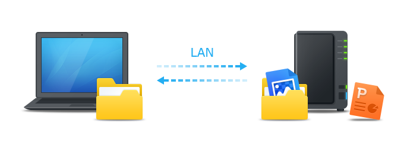
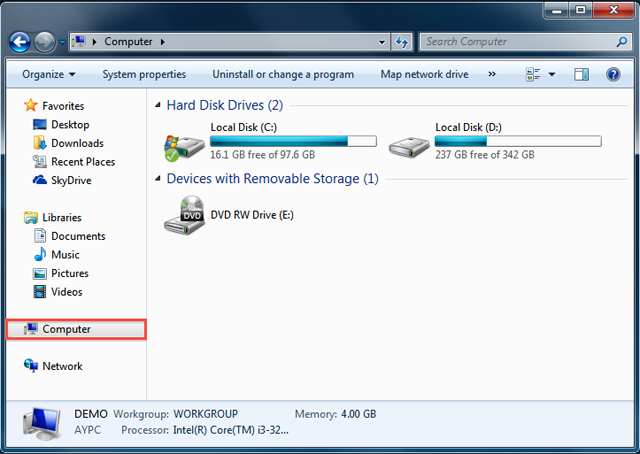
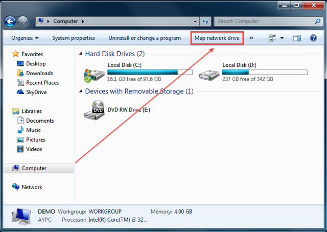
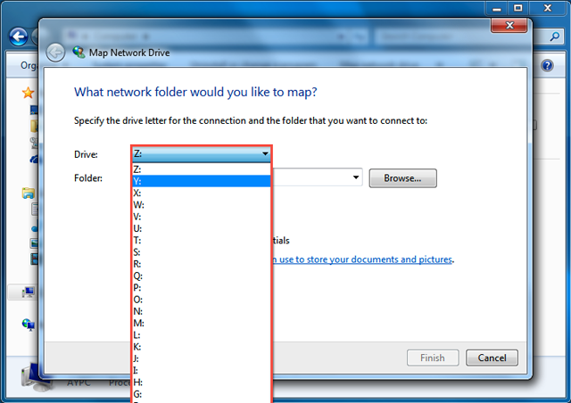
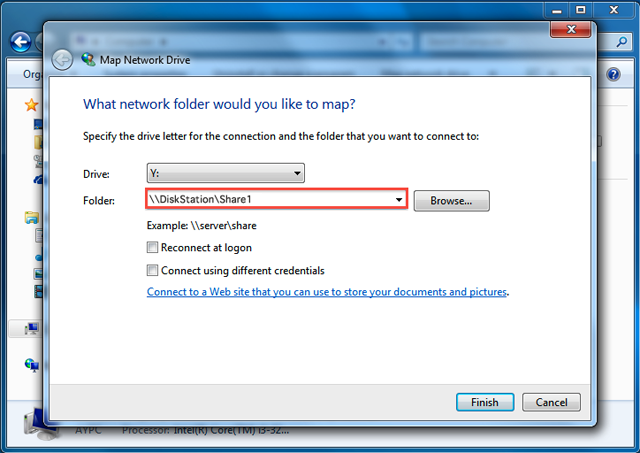
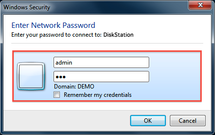
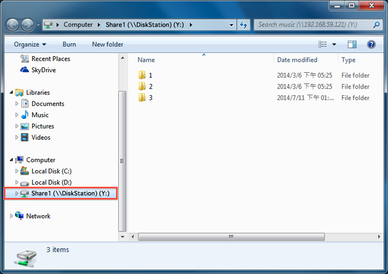

Översikt
Synology NAS är utformad att göra lagring och delning av filer i ditt lokala nätverk snabbt och enkelt, med direkt tillgång till delade mappar och filer på Synology NAS utan besväret att logga in på DSM varje gång. Till exempel kommer du att kunna lagra filer till Synology NAS med Windows Utforskare precis som andra nätverksenheter.
Mapp med Windows Utforskare
- Öppna ett Windows Utforskare-fönster och gå till Dator.

- Klicka på Mappad nätverkshårddisk. Denna åtgärd visar fönstret Mappad nätverkshårddisk.

- I fönstret Mappad nätverkshårddisk, välj ett fönster för nätverkshårddisken, välj en drivrutinbokstav i Drivrutin rullgardinsmenyn.

- I fältet Mapp, ange servernamnet för din Synology NAS och namnet på din delade mapp följt av och separerat av semikolon. Till exempel, om servernamnet för din Synology NAS är "DiskStation," och namnet på din delade mapp är "Share1," ska du ange "\\DiskStation\Share1". Klicka på Avsluta när du är klar.

- Ange ditt DSM-användarnamn och lösenord.

Går det inte att komma åt den delade mappen? Det användarkonto som du anger här måste ha åtkomstbehörighet för den delade mappen som du vill komma åt.
- Slutligen visas ett Windows Utforskar-fönster. Din delade mapp kommer nu att kartläggas och vara tillgänglig under Dator.
